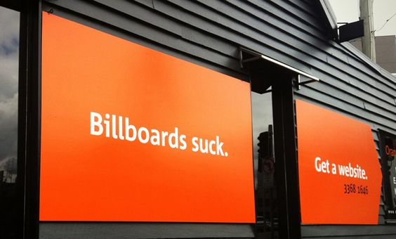

Oranges & Mandarins
In early 2013 I interviewed at Orange Digital and soon after began working there part time. Sandra and I were recently back from four and a half months in Europe and I was struggling to get myself reengaged with uni. I'd all but decided I was dropping out when we left to go traveling.
In the early days I was freelancing on the side and still working hospitality on the weekends but part-time quickly turned to full-time and then I never enrolled for my next semester. I was having a great time earning and learning in the industry again..
I spent almost 2 years at Orange building awesome sites and mobile apps with a fantastic team of people.
I started at Orange with a focus on WordPress development but over the course of about six months or so I transitioned to also developing Drupal sites. I was a bit reluctant at first but this new knowledge made me a better WordPress developer and added another CMS to my toolkit which I greatly value.
Much of my time at Orange was also spent with a focus on building responsive sites and improving workflows surrounding those type of projects. I'd been doing responsive stuff for quite a while and I was very passionate about it and sharing my knowledge.
In my time at Orange I:
-
Built sites both large and small. I worked on large custom WordPress sites for Government, large Drupal sites for schools, small sites, medium sites, old sites, new sites and landing pages and more.
-
I built numerous e-commerce sites in both WordPress and Drupal working with things like Jigoshop, WooCommerce and Drupal Commerce and Ubercart. This work involved theming, custom development, product entry, gateway integration and testing etc.
-
For many of the sites I arranged quotes on hosting, did the server provisioning and initial live deployment among other server administration tasks.
Other tasks included:
- SEO development and Analytics / GWT setup
- On and off site client training sessions with individuals and teams
- On and off site client meetings
- Assisting with development quotes for the sales team
- Mentoring junior developers and interns
- Team meetings & training presentations
-
Working with remote staff
- Together with some of the other devs I helped establish GIT as part of our development workflow along with championing the adoption of Sass
- Because of my love for tooling and everything new and shiny in our industry I was able to transition the whole team to tools like Trello and Slack
The Billboard Place

When I started we were located on the corner of Upper Roma and Milton Road and were better known, at least to all my friends, as "The Billboard" place.
The Billboard place was fun but it quickly got a little cramped as we started to grow.
It was here that I began working more and more with my new friend Drupal. Drupal and I spent a lot of late nights together!
The Valley Office
I think I'd been with Orange about a year when we moved to the Valley Office. This was a major upgrade to a much nicer open plan space that had been custom renovated.
We were all pretty excited because among other things we could now come to the office and get breakfast every morning.
The move saw us take on many more bigger and better clients and a number of new people joined the team. I found myself teaching more junior devs and throwing myself into larger and more complex projects where I was testing my knowledge and skill and happily finding that mostly I now really knew my stuff.
ThinkDo - The Brains of Orange Digital
For the majority of the time I was at Orange Digital I spent 1 day a week in our innovation office ThinkDo, working on internal projects. I worked on three different projects during that time. We learned a lot and lots of those lessons have gone into inventing, building and delivering disruptive business innovations for Orange clients. The lessons I learned during ThinkDo time are serving me well today, including how important discovery and down-time time is for staying sharp in this industry.
1 - Nodunno
Nodunno is an iOS App we developed over about a year. It is still available for download on the App Store but I don't believe it has had an update in a while. The basic premise was:
Making a decision can be so hard right? With Nodunno, it’s easy. You pick three options (text or pics) and send it to your buddies. Once they tap on your question, it shows the three options and they only have a few seconds to pick one. You get a guaranteed response, every time.
We had a team of 5-6 split between, design, dev and marketing. I built the promotional website and did Front-End work on the iOS app. They marketing guys and girls had a lot of fun doing promotional videos and other things for the project. Like this one!
And this slightly more tasteful one.
I learned a lot on this team about:
- developing and submitting apps to the App Store
- building effective landing pages and Facebook apps to drive campaigns
- marketing and SEO dos and donts
Ultimately our biggest lesson was that you need to launch quickly and fail fast. We learned our lesson for the next two projects and went to the other extreme. Taking a product to market in just 3 days with only 3 people per team!
2 - #Knowenough
Matt, Tom and I took our idea in a more serous "improve the world" direction this time. We developed the concept for an "Enlightened" fashion product. We launched a Kickstarter campaign for it and raised a couple of hundred bucks but ultimately our project wasn't chosen to continue internally and we didn't reach our funding goal. I took away a lot from this project about how Kickstarter works and how simple is best. There isn't much online to show for the project anymore but here is a video we made about it for the Kickstarter campaign.
The team that did win this round of innovation built The Coffee Post which I believe is still an operating business.
3 - 1BitWally
For our next round Matt, Tom and I took it pretty easy and had a lot of fun. We created a stupid little web game where you had to find a hidden pixel on the screen. If you clicked it you got to leave a message on the wall of the site. It quickly turned into an obscene mess but it was fun while it lasted. On the surface it appeared hard to solve but if you knew anything about html or just even used your tab key you could solve it in about 2 seconds (until we made some edits).
Long story short we somehow got a lot of traffic from Reddit, had a new submission at least ever second and crashed our server 3+ times, got the site "hacked", had people un-hack it for us …
Not sure exactly what we learn't from this project. The Internet is crazy?
Sadly 1bitwally is no longer online but you can get a feel for it's brilliance thanks to the Internet Archive. Have a listen to the track below (we had it auto playing in the background ) as you view it and imagine a new message appearing almost every second across the page.
I learn't a lot both personally and professional in my time at Orange and ThinkDo. I left in 2014 to spend time with my newborn son Finn and move our family back to Byron.
Since I left Orange, the ThinkDo teams have continued to do wonderful things like sendyourfriendapenisdrawing.com.